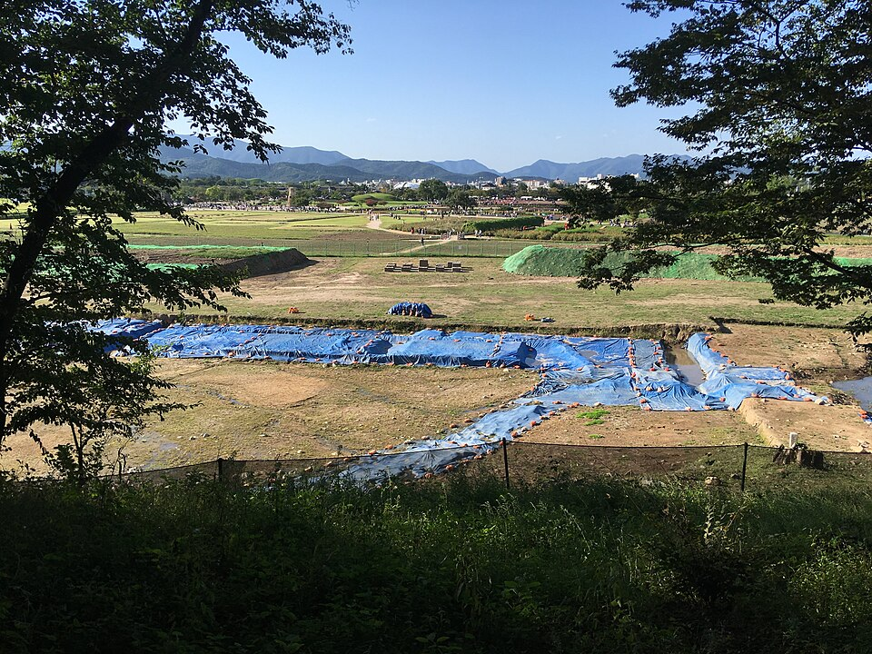
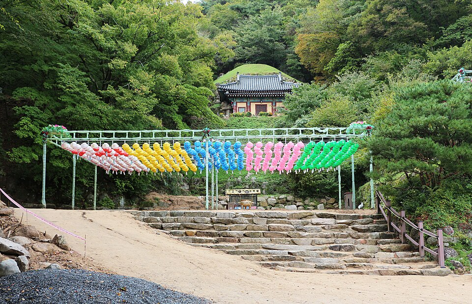
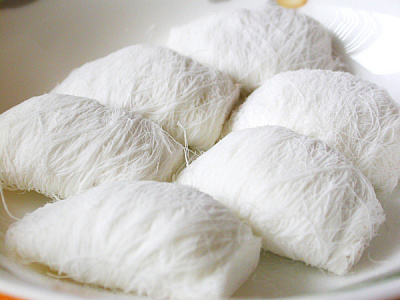

ภาพรวมกยองบุก จากวิดีโอ: คาเฟ่ ที่พักฮันอก และมรดกซิลลาในกยองจู
คู่มือแนะนำคาเฟ่ ที่พักฮันอก และสถานที่สมัยซิลลาที่ปรากฏในวิดีโอท่องเที่ยวกยองจูสามเรื่อง ตั้งแต่สะพานวอลจอนเกียวและถนนฮวางนีดัน-กิล ไปจนถึงถ้ำซอกกุรัม
กยองบุกและกยองจู
กยองบุก (จังหวัดคย็องซังเหนือ) เป็นที่ตั้งของกยองจู ราชธานีของอาณาจักรซิลลาที่รุ่งเรืองยาวนานกว่าหนึ่งพันปี รวมถึงหมู่บ้านฮาฮเวของอันดง ภูมิภาคนี้มีอาหารขึ้นชื่ออย่าง จิมดักอันดง (ไก่ตุ๋นซอส) โพฮังมุลโฮ (ซุปปลาดิบเย็น) และร้านอาหารมากมายตามถนนฮวางนีดัน-กิลของกยองจู คู่มือนี้รวบรวมสถานที่ในกยองจูที่ปรากฏในวิดีโอสามเรื่องได้แก่ 3 วันในกยองจู – ช้อปปิ้ง คาเฟ่ และอาหาร, ก้าวเข้าสู่อดีตของเกาหลี: การเดินทางสู่กยองจู และ 48 ชั่วโมงในกยองจู – ที่พักฮันอกและอาหารเกาหลี
มรดกซิลลาและสถานที่ท่องเที่ยว
สะพานวอลจอนเกียว

📍 สะพานวอลจอนเกียว · Naver Map · Google Maps
สะพานสมัยซิลลาที่บูรณะแล้ว ช่วยให้เห็นภาพกยองจูในอดีต และปรากฏในการเดินทางย้อนอดีตของเมืองในวิดีโอ
แหล่งพระราชวังวอลซอง

📍 แหล่งพระราชวังวอลซอง · Naver Map · Google Maps
ที่ตั้งของพระราชวังของราชวงศ์ซิลลาในอดีต การเดินชมบริเวณช่วยให้เห็นใจกลางของราชธานีโบราณ
สุสานเกิมกวานชง
📍 สุสานเกิมกวานชง · Naver Map · Google Maps
สุสานของราชวงศ์ซิลลา หนึ่งในเนินฝังศพจำนวนมากที่กระจายอยู่รอบกยองจู เหมาะแก่การแวะหากอยากศึกษาประวัติศาสตร์ซิลลา
หมู่บ้านดั้งเดิมเกียวช็น

📍 หมู่บ้านดั้งเดิมเกียวช็น · Naver Map · Google Maps
หมู่บ้านดั้งเดิมที่มีบ้านฮันอก ตรอกซอกซอยเหมาะกับการเดินเล่นช้าๆ ไปกับบรรยากาศเมืองเก่าของกยองจู
ถ้ำซอกกุรัม

📍 ถ้ำซอกกุรัม · Naver Map · Google Maps
วัดถ้ำหินที่มีชื่อเสียง และเป็นหนึ่งในแหล่งมรดกสำคัญของกยองจู
ถนนฮวางนีดัน-กิล (ถนนทองคำ)

📍 ถนนฮวางนีดัน-กิล · Naver Map · Google Maps
ถนนที่เรียงรายด้วยคาเฟ่และร้านค้า เช่นเดียวกับในวิดีโอเรื่องช้อปปิ้งและคาเฟ่ เหมาะแก่การเดินเล่น เลือกชม และพักผ่อน
ที่พักฮันอก
ซาดาฮัม
📍 ซาดาฮัม · Naver Map · Google Maps
ที่พักฮันอกที่จองผ่าน Airbnb ในวิดีโอเรื่องหนึ่ง เป็นข้อมูลอ้างอิงที่มีประโยชน์หากอยากพักค้างคืนในบ้านทรงเกาหลีดั้งเดิม
ฮันอกมูนสเตย์
📍 ฮันอกมูนสเตย์ · Naver Map · Google Maps
ที่พักแบบเกสต์เฮาส์ฮันอกดั้งเดิมในกยองจู เหมาะกับผู้ที่วางแผนทริปรอบการพักฮันอกและอาหารเกาหลี
ร้านอาหารและคาเฟ่
โดวาดัง
📍 โดวาดัง · Naver Map · Google Maps
ร้านอาหารเกาหลี เป็นตัวเลือกดีเมื่อต้องการมื้ออาหารเกาหลีแท้ๆ ระหว่างอยู่ในกยองจู
โอมาโมริ กยองจู
📍 โอมาโมริ กยองจู · Naver Map · Google Maps
ร้านของหวานชาเขียวมัทฉะ เป็นที่พักพิงง่ายๆ ระหว่างแหล่งมรดก สำหรับคนที่ชอบชาเขียว
บุช คาเฟ่

📍 บุช คาเฟ่ · Naver Map · Google Maps
คาเฟ่ที่เน้นเค้ก เหมาะเมื่ออยากทานของหวาน
คาเฟ่ดาซิบอม
📍 คาเฟ่ดาซิบอม · Naver Map · Google Maps
คาเฟ่อบอุ่นที่มีสวน เหมาะกับการนั่งพักอย่างสงบ
ออลิวี คาเฟ่
📍 ออลิวี คาเฟ่ · Naver Map · Google Maps
หนึ่งในคาเฟ่ที่ปรากฏในวิดีโอ ระหว่างการไปคาเฟ่ต่างๆ ในกยองจู
คาเฟ่ 1984
📍 คาเฟ่ 1984 · Naver Map · Google Maps
อีกหนึ่งคาเฟ่ที่ปรากฏในวิดีโอท่องเที่ยวกยองจู
อาเดน คาเฟ่
📍 อาเดน คาเฟ่ · Naver Map · Google Maps
ปรากฏในวิดีโอเช่นกัน และเพิ่มเข้าในเส้นทางไปคาเฟ่ได้ง่าย
เคล็ดลับการวางแผนเส้นทาง
สะพานวอลจอนเกียว แหล่งพระราชวังวอลซอง และหมู่บ้านเกียวช็น อยู่รวมกันในเขตมรดกใจกลางกยองจู จึงเหมาะกับการเดินเป็นวงเดียวกัน สุสานเกิมกวานชงและถนนฮวางนีดัน-กิลก็อยู่ในวันเดียวกันได้ สลับระหว่างประวัติศาสตร์กับคาเฟ่หรือการช้อปปิ้ง ถ้ำซอกกุรัมตั้งอยู่บนเขาโทฮัมซาน ห่างจากสถานที่ในเมือง จึงควรเผื่อเวลาประมาณครึ่งวัน คาเฟ่และร้านอาหารกระจายตัวอยู่ จึงควรตรวจสอบตำแหน่งจากลิงก์แผนที่ด้านล่างและแทรกเป็นจุดพักระหว่างสถานที่ท่องเที่ยว การจบวันที่ที่พักฮันอกเป็นวิธีที่เหมาะในการซึมซับบรรยากาศของกยองจู
ร้านและสถานที่ในวิดีโอ
- ออลิวี คาเฟ่ (Olivee Cafe) (올리비 카페) คาเฟ่ Naver Map Google Maps
- สะพานวอลจอนเกียว (월정교) (월정교) สะพานบูรณะสมัยซิลลา Naver Map Google Maps
- ถนนฮวางนีดัน-กิล (ถนนทองคำ) (황리단길) ถนนคาเฟ่และร้านค้า Naver Map Google Maps
- บุช คาเฟ่ (Bush Cafe) (부시 카페) เค้ก Naver Map Google Maps
- ซาดาฮัม (Sadaham) (사다함) ที่พักฮันอกที่จองผ่าน Airbnb Naver Map Google Maps
- โดวาดัง (Dowadang) (도와당) ร้านอาหารเกาหลี Naver Map Google Maps
- โอมาโมริ กยองจู (Omamori Gyeongju) (오마모리 경주) ของหวานชาเขียวมัทฉะ Naver Map Google Maps
- แหล่งพระราชวังวอลซอง (경주 월성) (경주 월성) แหล่งพระราชวังซิลลา Naver Map Google Maps
- คาเฟ่ 1984 (Cafe 1984) (카페 1984) คาเฟ่ Naver Map Google Maps
- สุสานเกิมกวานชง (금관총) (금관총) สุสานราชวงศ์ซิลลา Naver Map Google Maps
- อาเดน คาเฟ่ (Aden Cafe) (아덴 카페) คาเฟ่ Naver Map Google Maps
- ฮันอกมูนสเตย์ (Hanok Moonstay) (한옥문스테이) ที่พักฮันอกดั้งเดิมในกยองจู Naver Map Google Maps
- คาเฟ่ดาซิบอม (Cafe Dasi Bom) (카페 다시봄) คาเฟ่อบอุ่นที่มีสวน Naver Map Google Maps
- ถ้ำซอกกุรัม (Seokguram Grotto) (석굴암) ถ้ำหินที่มีชื่อเสียง Naver Map Google Maps
- หมู่บ้านดั้งเดิมเกียวช็น (경주 교촌마을) (경주 교촌마을) หมู่บ้านดั้งเดิมที่มีบ้านฮันอก Naver Map Google Maps
ที่ตั้งและเวลาเปิดอาจเปลี่ยนแปลง โปรดตรวจสอบแผนที่ก่อนไป
วิดีโอที่เกี่ยวข้อง


บทความอื่น
- ซีรีส์ 'ดอกุเมนทารี 3 วัน' ของ KBS: บ้านแพกซา ตลาดเต็นท์ยงซาน และตลาดนัมแดมุน
- จอนนัมบนจอ: เกาะห่างไกลของซินันและตลาดรุ่งอรุณจากสารคดี KBS 'Documentary 3 Days'
- ถ่ายทอดผ่านจอที่กังวอน: ท่าเรือโดยสารนานาชาติซokโช และตลาดห้าวันจองซอน
- ตรอกในจอที่แดกู: ตรอกมอเตอร์ไซค์และถนนปูซอง-โร ร้านเต็นท์ปิ้งบุลโกกิถ่านแกลบ
- สถานที่จากวิดีโอในจอนนัม: จากยอซูสู่ซุนชอนและโบซอง
- ภาพรวมอาหารและสถานที่เที่ยวจอนบุก จากคลิปท่องเที่ยว: ข้าวยำ ตลาด และที่พักฮันอกในจอนจู